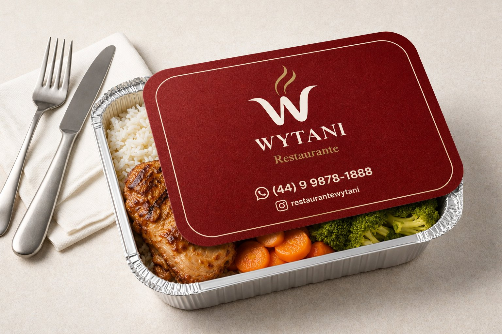
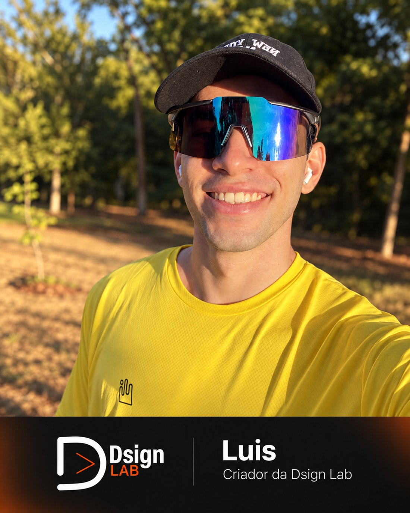
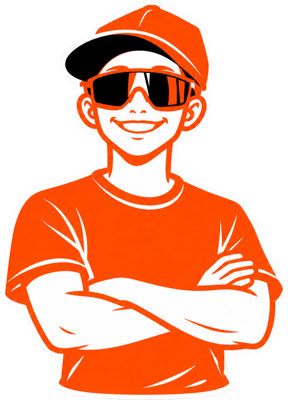

Estúdio de design gráfico. Crio marcas, peças e conteúdo para quem quer ser lembrado — escolha por onde começar.
TOQUE EM UM SERVIÇO PARA VER OS DETALHES
Identidade
1 de 3Muito além de um símbolo: uma identidade que traduz, comunica e permanece.
- Logotipo e variações
- Paleta de cores e tipografia
- Manual da marca
- Papelaria e aplicações
Portfólio
Uma seleção de trabalhos recentes. Filtre por tipo de serviço.

Blast — Tela personalizada para seu aplicativo de delivery
ArtesArketh Fotografia — Logotipo
IdentidadeLivia Dias — Logotipo
Identidade
ME — Conceito para fisioterapia
Identidade
Blast — Arte da tela inicial
Artes
Wytani — Logotipo
IdentidadeComo funciona
- Passo 1
Briefing
Uma conversa para entender o seu negócio, o público e o que precisa ser feito.
- Passo 2
Conceito
Pesquisa de referências e a direção visual que vai guiar o projeto.
- Passo 3
Criação
Desenvolvimento das peças, com rodadas de ajuste junto com você.
- Passo 4
Entrega
Arquivos finais organizados e prontos para imprimir, postar ou aplicar.

Um laboratório de ideias visuais
A Dsign Lab nasceu para transformar ideias em design que funciona — da essência da marca à forma como ela se comunica.
Sou Luis, designer gráfico e fundador da Dsign Lab. Meu propósito é ajudar marcas a transformarem suas ideias em uma identidade visual que comunique, conecte e marque presença.

Personalidade da marca
O mascote da Dsign Lab